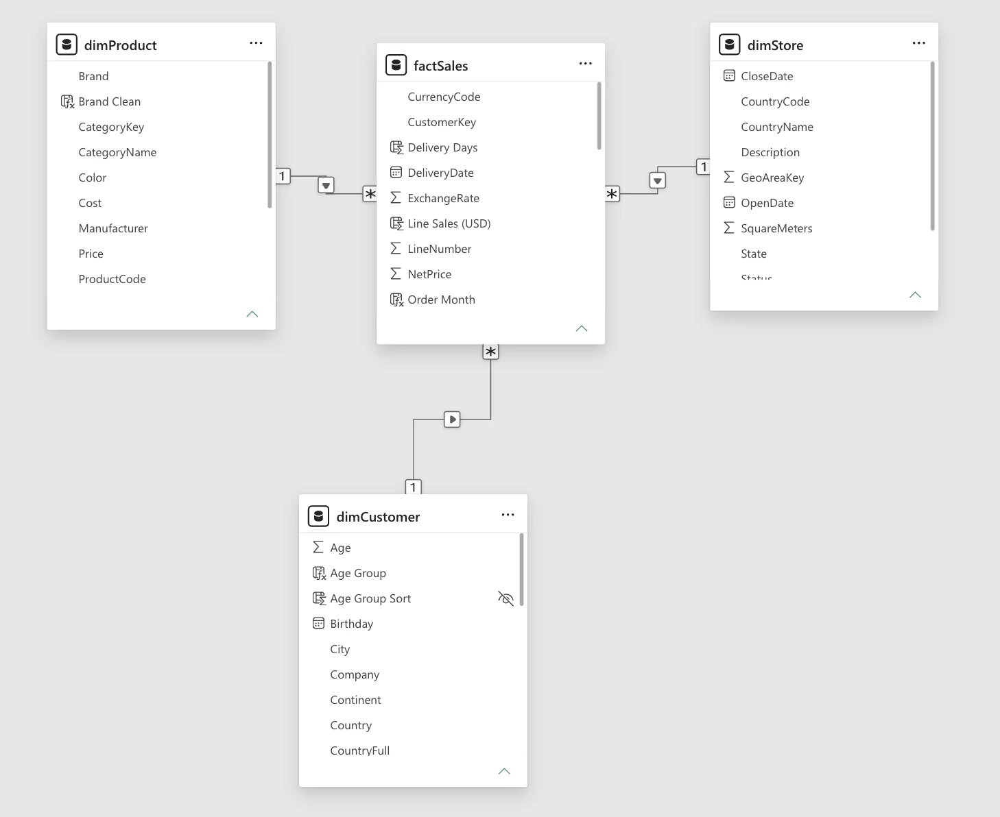
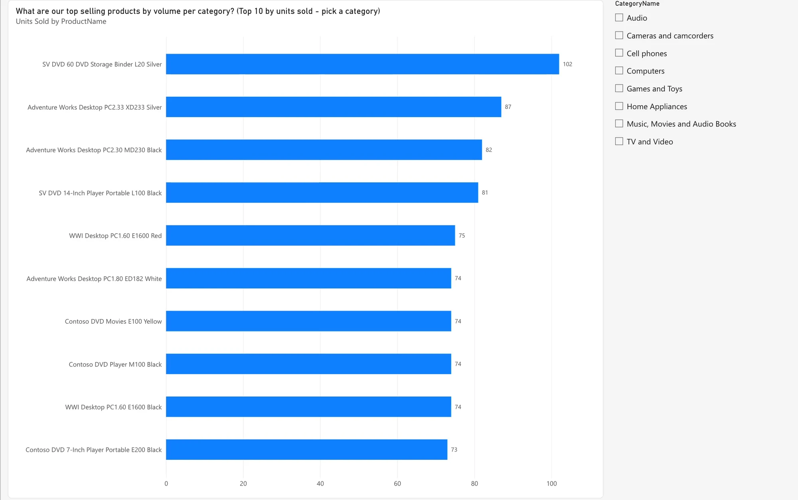
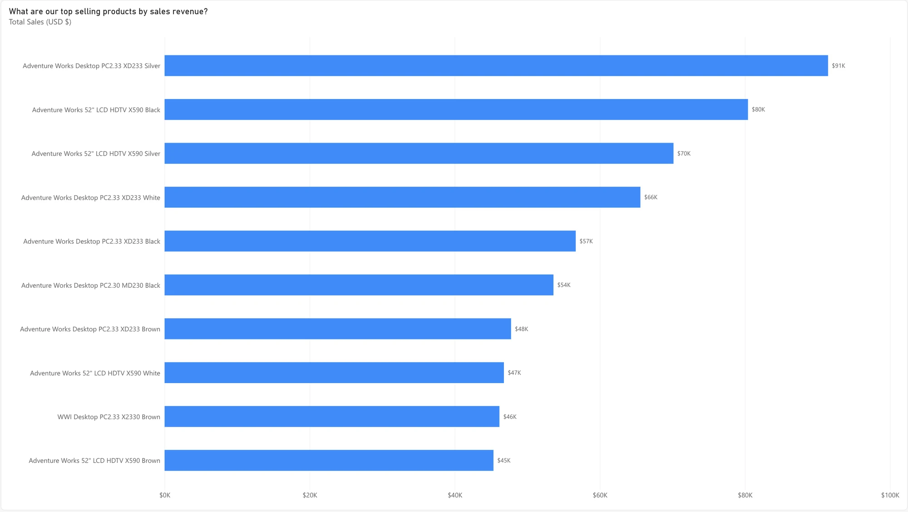
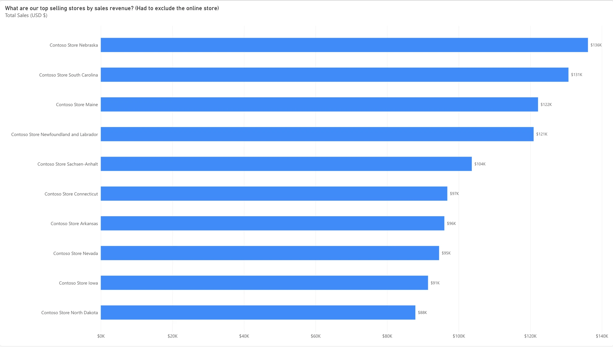
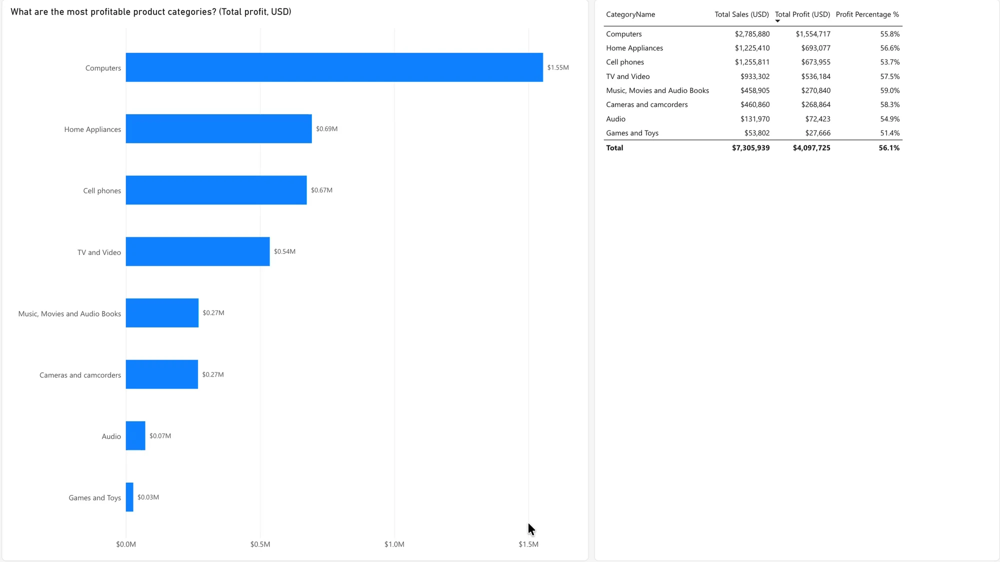
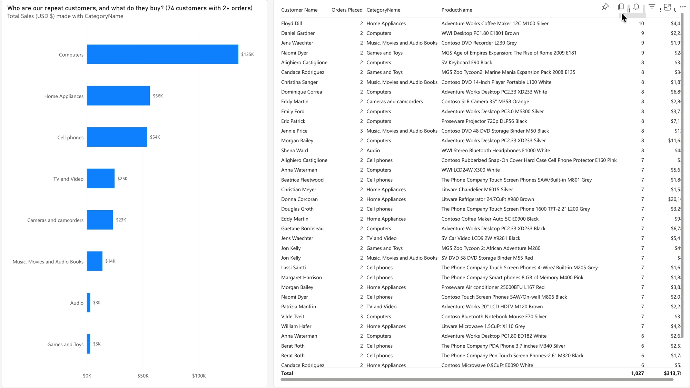
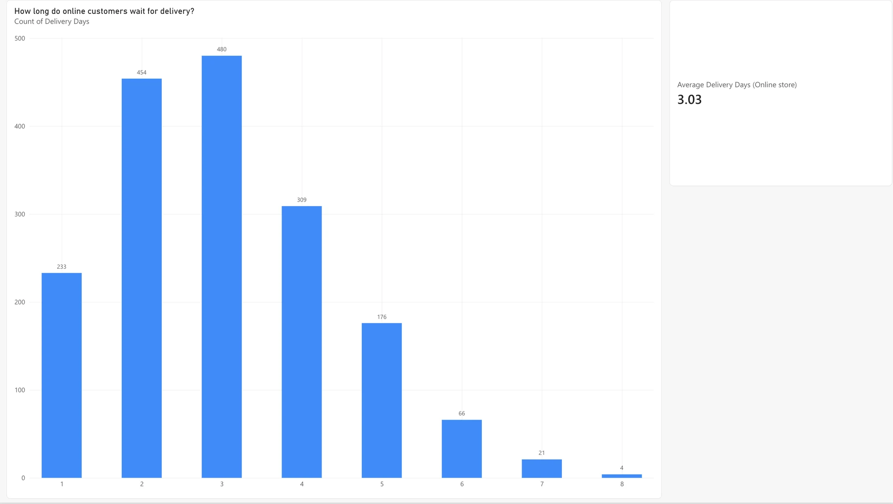
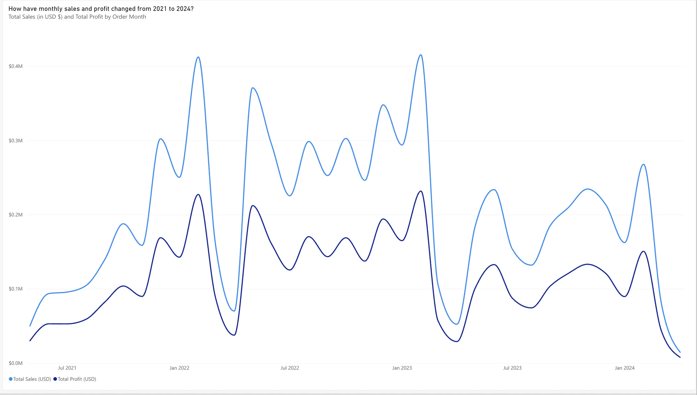
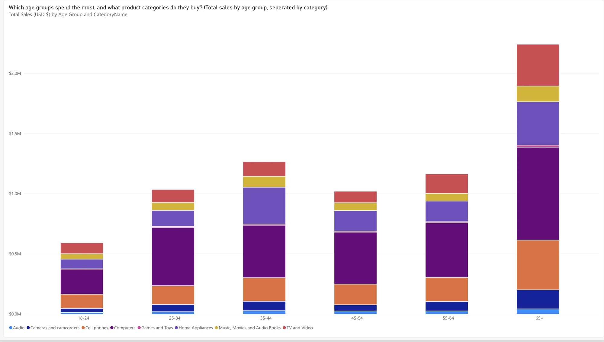
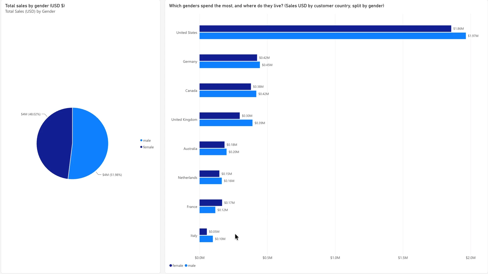

Where Contoso’s money really comes from
A 10-page Power BI sales report, 2021 to 2024
I modeled four years of Contoso retail sales as a star schema, cleaned up the data’s traps, and built one page for each business question a sales team would ask, from best-selling products to who the repeat customers are.
- Tool
- Power BI (web)
- Data
- 7,794 order lines, 3,165 customers, 74 stores
- Period
- May 2021 – April 2024
- Total sales
- $7.3M · 56% profit margin
Data cleanup
Three things in the raw data would have skewed the answers if I had charted it as-is:
- Five currencies. Orders were placed in USD, EUR, GBP, CAD and AUD. I checked the prices against the product list and found they were all already stored in US dollars, with an exchange-rate column for the customer’s own currency. Every total in this report is in USD so the countries compare fairly.
- One store swamps the rest. The online store made $3.9M of the $7.3M in sales. I added a Sales Channel column (Online / Physical Store) so I could leave it out of the store ranking and use it on its own for the delivery question.
- Messy brand names. Some brand names had trailing spaces, which splits one brand into two in a chart. I added a trimmed Brand column.
Measures I wrote in DAX: Total Sales, Total Cost, Total Profit, Profit Margin %, Units Sold, Order Count, Repeat Customers and Average Delivery Days. Columns I added: Delivery Days, Order Month, Age Group and Customer Type (repeat or one-time).
The report
How the data model works: a star schema


One fact table of sales in the middle, three dimension tables around it.
factSales has one row per order line: the numbers to add up (quantity, net price, unit cost) plus a key for each dimension. dimProduct says what was sold (name, brand, category), dimCustomer says who bought it (gender, age, country) and dimStore says where it was sold.
Each dimension links to the fact table one-to-many: one product, customer or store has many sales. That’s why a filter on any dimension, such as picking a category, flows into the sales and every measure updates with it.
What are our top selling products by volume per category?


Cheap media accessories and desktop PCs sell the most units.
The overall best seller is a DVD storage binder (102 units), followed by the Adventure Works Desktop PC2.33 (87), which is also the top seller in Computers. The leaders in other categories sell far fewer: the top camera sold 23 units and the top game 64.
Built with: a Top N filter (top 10 by Units Sold) and a category slicer.
What are our top selling products by sales revenue?


Desktop PCs and big TVs bring in the most money.
The Adventure Works Desktop PC2.33 in silver leads at $91K. Nine of the top 10 are Adventure Works desktops or its 52-inch LCD TV in different colors. Ranking by revenue instead of units changes the list almost completely, because the high-volume items on page 02 are cheap.
What are our top selling stores by sales revenue?


Nebraska, South Carolina and Maine lead the physical stores.
Nebraska made $136K, South Carolina $131K and Maine $122K. I had to leave out the online store: at $3.9M it made more than half of all sales, and next to it every physical store’s bar was too small to compare.
What are the most profitable product categories?


Computers, by a wide margin: $1.55M of the $4.1M total profit.
That’s more than twice the next category, Home Appliances ($693K). Margins are similar everywhere, from 51% (Games and Toys) to 59% (Music, Movies and Audio Books), so a category’s profit comes from how much of it sells, not from a better markup.
Who are our repeat customers, and what do they buy?


Only 74 of 3,165 customers came back, and they mostly buy computers.
Repeat customers spent $314K in total. Computers made up $135K of that, followed by Home Appliances ($56K) and Cell phones ($54K). The table lists who they are and every product they bought, so the sales team could reach out to them.
Built with: a calculated Customer Type column (orders per customer > 1) used as a page filter.
How long do online customers wait for delivery?


About three days on average.
The average wait is 3.03 days. Most orders arrive in 2 or 3 days, about 85% arrive within 4, and the slowest took 8.
Built with: a Delivery Days column (delivery date minus order date) and a page filter for the online channel only.
How have monthly sales and profit changed from 2021 to 2024?


Sales grew through 2022, then fell off after early 2023.
Monthly sales climbed from under $0.1M in mid-2021 to peaks of about $0.41M in early 2022 and again in early 2023. 2022 was the strongest year ($3.2M), and 2023 dropped to $2.4M. Profit follows sales closely because the margin stays near 56%. The data ends on April 20, 2024, so the last dip is a partial month, not a collapse.
Which age groups spend the most, and what product categories do they buy?


Customers 65 and over spend the most: $2.2M, almost twice any other group.
That’s mainly because they’re the largest group (978 customers). Per person, every age group spends a similar $2,200–$2,450. Computers are the biggest category in every age group, followed by cell phones and home appliances.
Built with: an Age Group column (18–24 up to 65+) with a hidden sort column so the groups stay in order.
Which genders spend the most, and where do they live?


Men spend slightly more (52%), and the US is by far the biggest market.
Men spent $3.8M and women $3.5M, but there are also more male customers, so per person the two are nearly equal. US customers spent $3.8M, more than the next three countries combined (Germany, Canada and the UK). Men outspend women in every country except France.